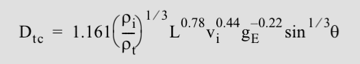
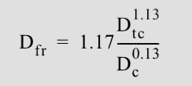

Crater Facility
A Simplified Approximation of Craters

Determining the size of the final crater from a given impactor size, density, velocity, and angle of incidence is not a trivial task. The central difficulty in deriving an accurate estimate of the final crater diameter is that no observational or experimental data exist for impact craters larger than a few tens of meters in diameter... we use a set of scaling laws [D ~ E^(1/3)] that extrapolate the results of small-scale experimental data to scales of interest or extend observations of cratering on other planets to the Earth. [Here is the transient scaling equation:]

The transient crater is only an intermediate step in the development of the final crater (Fig. 3). To estimate the final crater diameter, we must consider the effect of the transient crater's collapse using another scaling law. To derive an estimate of the final crater diameter for simple craters, we applied an analytical model for the collapse of simple craters... In matching the observational data to model predictions we found that an excellent first order approximation is that the final rim-to-rim diameter Dfr for a simple crater is given approximately by:
